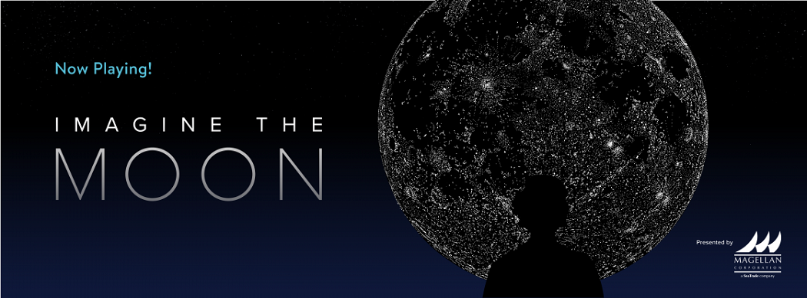

Планетарий Адлера
Небесное шоу "Представь Луну"
Луна всегда была источником чудес для человечества
Новейшее небесное шоу Адлера «Вообрази Луну» рассказывает о том, как Луна вдохновляла человеческое творчество, обучение и исследования с тех пор, как мы посмотрели на небо.
Каждое открытие открывало новые возможности для созерцания и воображения, пока, руководствуясь мечтами, мы не покинули Землю и не отправились туда в удивительных путешествиях, которые завершились астронавтами, идущими по Луне. Люди представляли Луну светящимся диском в небе, местом назначения в космосе и миром, который имеет свое происхождение от Земли. Сила человеческого воображения продолжает вдохновлять наши отношения с Луной как нашим партнером в космосе и компаньоном в нашем небе.
Длительность шоу: около 30 минут